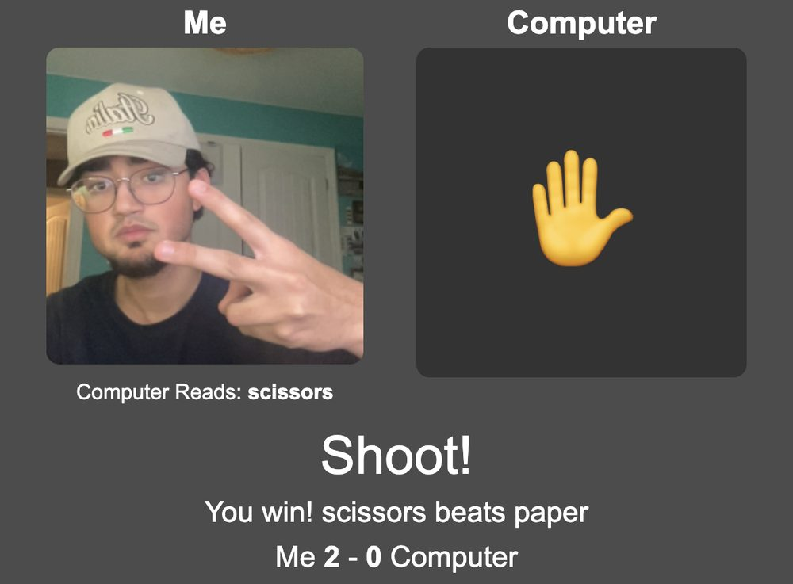

Rock Paper Scissors vs AI
A rock paper scissors game you play with your webcam. I trained an image model in Teachable Machine with 350+ photos for each class (rock, paper, scissors and "nothing"), then built the game around it in JavaScript. The model reads your hand on every frame, there's a 3-2-1 countdown, and whatever it sees at "Shoot!" is your move. First to 3 wins.
Problems I had to solve
- Predictions kept coming back as NaN. The newest library versions didn't work with my exported model, so I pinned older ones.
- The first model only ever guessed rock. I retrained it with photos at more angles and distances.
- It only counts a guess if the model is over 60% sure, so a blurry hand doesn't count as a move.